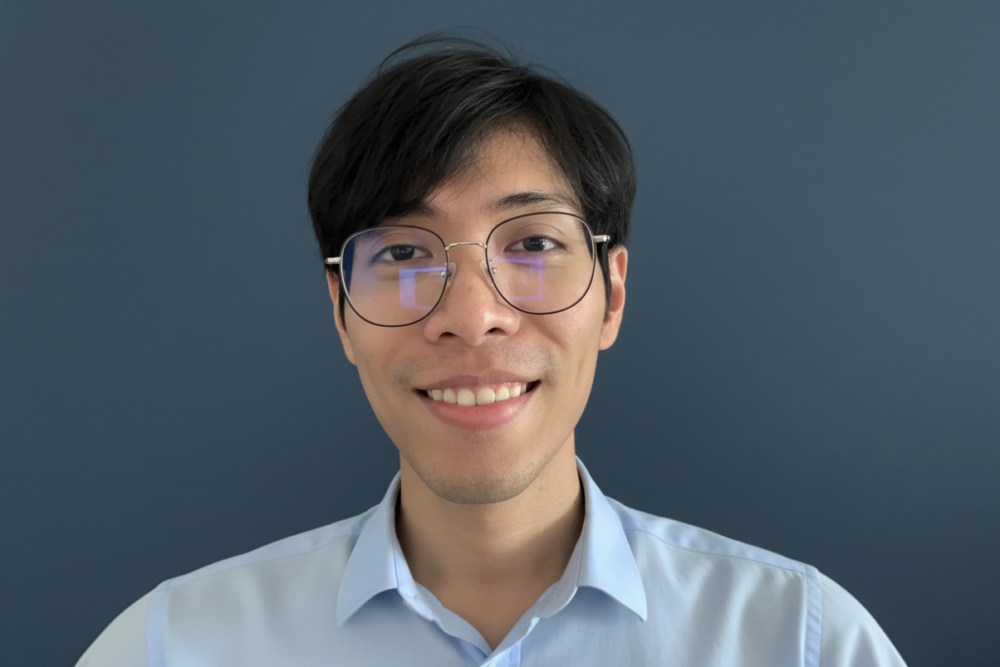

Developer, HCSREL
Building the Human Center platform and team site

Human Center · Bangkok
Developer
Human Center · formerly STEAM Platform · King Mongkut's University of Technology Thonburi
Bangkok-based developer shipping websites and web apps for more than 7 years — from marketing platforms to sustainability education programs.
Summary
Teeramate Nuanplub (Toto) is a developer based in Bangkok with 7+ years of experience shipping websites and web apps. He is currently building at Human Center, where he puts website development, integrations, and AI-powered SEO to work for the team's products.
Previously he was webmaster and content manager at STEAM Platform, supporting circular-economy and sustainability education programs that train young leaders, policymakers, and entrepreneurs toward a green transition.
He holds an MSc in Information Technology and a BSc in Applied Computer Science — Multimedia from King Mongkut's University of Technology Thonburi.
Now
Building the Human Center platform and team site
Website development, integrations & AI-powered SEO
Building and tuning client sites for performance and conversion
Connecting marketing platforms, CRM, and AI-assisted SEO tooling
Learning and building together with the team, one PR at a time
Path
Education
Connect
For collaborations and building together, reach him on LinkedIn or through the Human Center team.